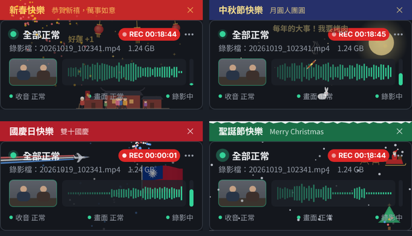

做筆錄時，
錄音有沒有在錄，
看一眼就知道。
AudioWatch 是放在螢幕右下角的小視窗，同時盯住收音、錄影畫面與錄影狀態。收音中斷、畫面全黑、忘了按錄影，當下就會變色提醒。
錄影沒有聲音，筆錄可能就不能用
詢問全程錄音錄影，是法律明定的程序。設備出狀況時，往往要等到開庭調閱才發現錄影檔沒有聲音，這時已經無法補救。
2026 年 10 月就有一件案例：警詢錄影畫面沒有聲音，說明原因是電腦軟體不相容。法院認為詢問前就應確認錄音設備正常，不能把設備問題的後果轉嫁給被詢問人，警詢筆錄因此被認定沒有證據能力。
AudioWatch 的目的很單純：讓問題在製作筆錄的當下就被發現。
訊問被告，應全程連續錄音；必要時，並應全程連續錄影。 刑事訴訟法第 100 條之 1 第 1 項。依第 100 條之 2，司法警察詢問犯罪嫌疑人時準用。
收音
即時音波顯示麥克風有沒有聲音進來。收音中斷、麥克風被靜音、長時間無聲都會提醒。
畫面
每秒檢查一次錄影軟體的預覽畫面。全黑、只剩單一顏色、畫面凍結都會提醒。
錄影
看錄影檔有沒有持續變大，判斷是否真的在錄影。錄影停止、有人說話卻沒在錄，都會提醒。
燈號怎麼看
| 綠燈 | 收音、畫面、錄影都正常，可以放心進行詢問。 |
| 黃燈 | 需要注意：持續無聲、畫面凍結、錄影停止，或有人說話卻沒在錄影。提示音響一次。 |
| 紅燈 | 立即處理：收音中斷、麥克風被靜音、畫面全黑或無影像。整個視窗閃爍，每 5 秒提示一次。 |
每次中斷與恢復的時間都會自動記錄，右鍵選「本次異常紀錄」即可複製，方便在筆錄中註記。
使用方式
不用安裝，設定一次會自動記住，大約 2 分鐘。
解壓縮並開啟
下載後解壓縮，雙擊 AudioWatch.exe，小視窗會出現在螢幕右下角。
選擇麥克風
在小視窗按右鍵，選「選擇麥克風」，選錄影系統使用的那一支。
框選錄影畫面
點小視窗左邊的「＋ 框選畫面」，用滑鼠框住錄影軟體的預覽畫面。
指定錄影資料夾
點「錄影 未設定」，選擇錄影檔存放的資料夾。按一次錄影，約 2 秒後右上角出現紅色 REC，就完成了。
第一次開啟時，Windows 可能跳出警告
這是因為程式沒有購買商業數位簽章，Windows 不認得發行者，並不是偵測到病毒。請點 其他資訊，再點 仍要執行。不放心的話，可以先用下方的 SHA256 核對檔案。
節日到了，小視窗也會過節
春節、端午、中秋、國慶、聖誕、元旦和警察節，小視窗會自動換上節慶動畫：三合院前團圓的家人、比賽的龍舟、戴柚子帽的玉兔、拉彩煙的戰機、駕雪橇的聖誕老公公、跨年倒數，還有警察節的抓人短劇。點一下小視窗還有小驚喜。
筆錄結束時，小視窗會說聲「辛苦了」，並告訴你這次錄了多久、收音是否全程正常。
一出現警示，所有節慶效果立刻收起；不喜歡也可以在右鍵選單關閉。

只看狀態，不碰內容
程式只判斷「有沒有聲音、畫面正不正常、檔案有沒有在變大」，不會取得任何內容。
- 不錄音：只計算音量大小，聲音不保存
- 不錄影：只看你框選的區域，縮圖不存檔
- 不讀影片：錄影資料夾只看檔名與大小
- 不連網：程式沒有任何網路功能
- 不需要系統管理員權限、不修改系統設定
- 不會開機自動執行，關掉就完全停止
certutil -hashfile AudioWatch.exe SHA256，或在小視窗右鍵 →「關於本程式」查看。
常見問題
需要安裝嗎？
不用。解壓縮後直接執行 AudioWatch.exe。電腦需要 Windows 10 或 11（內建 .NET Framework 4.x，不必另外安裝）。
支援哪些錄影軟體？
不限品牌。錄影狀態是看錄影檔有沒有持續變大，畫面是看你框選的預覽區域，所以任何會把錄影檔存在電腦裡的錄影軟體都適用。
單位電腦被防毒或資訊管理系統擋下來怎麼辦？
請把下載包裡的「給資訊室的說明.txt」交給資訊人員，裡面列出程式的所有行為與部署建議，資訊單位如需審閱原始碼可以來信索取。
節慶動畫會不會干擾工作？
不會。動畫只畫在空白處、不蓋住警示，出現黃燈或紅燈就立刻全部收起；每天只跳一次橫幅。右鍵「節慶彩蛋」可以選活潑、標準、含蓄或關閉。
綠燈就代表錄影檔一定有聲音嗎？
不完全是。本工具看的是麥克風訊號與錄影檔大小，無法打開影片確認音軌。筆錄結束後，仍建議回放開頭與結尾各幾秒做最後確認。